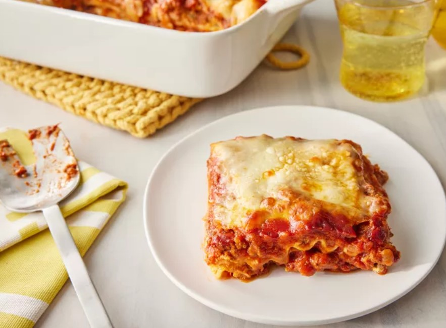

World Best Lasagna

Description
Making lasagna can be time-consuming, but the results are well worth the wait. You'll find a detailed ingredient
list
and step-by-step instructions in the recipe below, but let's go over the basics:
Ingredients
- Lasagna noodles
- Ground beef
- Tomato sauce
- Ricotta cheese
- Mozzarella cheese
- Parmesan cheese
- Garlic
- Onion
- Olive oil
- Salt and pepper
Steps
- Preheat the oven to 375°F (190°C).
- Cook the lasagna noodles according to package instructions.
- In a skillet, heat olive oil and sauté garlic and onion until translucent.
- Add ground beef and cook until browned. Drain excess fat.
- Add tomato sauce, salt, and pepper. Simmer for 10 minutes.
- In a baking dish, layer noodles, meat sauce, ricotta, mozzarella, and Parmesan.
- Repeat layers until all ingredients are used, finishing with mozzarella on top.
- Bake for 30-40 minutes until cheese is bubbly and golden.
- Let it cool for a few minutes before serving.
Enjoy your homemade lasagna!